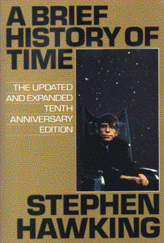

A Brief History of Timeby Stephen Hawking
publisher: Bantam Doubleday
Non-fiction, 197 pages | 
(book cover art, Copyright ©1998 David Montgomery)
Used with Permission. |
Return to the Book MenuPrevious|Next
Description:
A whirlwind tour of the universe, from the big bang to black
holes. A book that dares to ask the questions "What came before the big
bang?", "Is time travel possible?" and "Are Black holes really black?"
A classic.
Recommended for: people who ask big questions, astronomers,
people who like to think about big stuff.
Did-you-read questions:
Deadline: February 1, 2005.
These should be easy questions, but you should have the questions ready and keep an eye out during your reading. Each question should be answered with 1-2 sentences.
Note: these questions are not probably not the most important part of the book! Your essay will not have to cover these questions!
- What is a light cone?
- What five-word quotation was the source of the term "quark"?
- What does approaching a black hole have to do with pasta?
- What is the anthropic principle?
- What three arrows indicate the difference between past and future?
Report Questions:Deadline: Peer Review Session on February 8, 2005; paper due February 10, 2005.
You should write a 3 - 4 page essay on one of the following questions. Your essay should include examples and references to the book, unless otherwise specified. Page number references are sufficient for citing material from the primary book. If you use outside materials, cite your sources in full. If you would rather write on a different topic, you may, but clear it with Mr. Howe or Ms. Sullivan first.
- Dr. Hawking has discussed a number of unusual topics, including the expansion
of the universe, black holes, and the direction of time. Many people have
said that reading this book changed the way they looked at the universe.
How has reading this book affected you? Was there anything that you found
particularly fascinating?
- Of the topics that Dr. Hawking discussed, which one or ones left you with
questions that you would like to learn more about? Describe what you would
like to see investigated further, and (perhaps) how we might go about exploring
these ideas further.
- Consider any two of the major topics (such as the ones described in the
chapter titles) and discuss how they are related.
- What do you think of Dr. Hawking's ideas about cosmology? What do you agree
or disagree with in this book?
Graphic and Presentation:
Deadline: February 21 - March 3, 2005.You will give a 10 minute presentation on both of the following:
- Convince your peers that they should (or should not) read this book. (This may include a brief summary of the book.) Give examples of what was cool or worthwhile in the book, and what you got out of it (or didn't).
- Describe a (realistic) science idea that you learned about in this book, citing information from at least 2 external sources (other than the dictionary). If you would like help choosing or understanding an idea from your book, you are invited to come talk to Mr. Howe or Ms. Sullivan.
Note: This presentation should not be just a reading of your paper!Along with this presentation, you should have a graphic that will go with it. A Power Point presentation is recommended, but if you have a special idea for a something else, such as a model, an original video presentation, or a well done drawing/ painting/ sculpture/ etc., you may do so, provided it involves a similar level of effort and polish. Speak to Mr. Howe or Ms. Sullivan first if you are considering an alternate graphic format to the Power Point.
Return to the Book MenuPrevious|Next